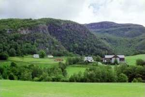

Have your holidays at Fossane with the entire family and expect something else!
The nature you find in Ryfylke, mirrors the nature of Norway. You find it all, from steep mountain sides to green fields,
from wild rivers to clear waters, from deep fjords to groups of islands. The farm is situated in the village Vormedalen, 20
km from the county centre of Hjelmeland. It is one and a half hours away from the city of Stavanger.